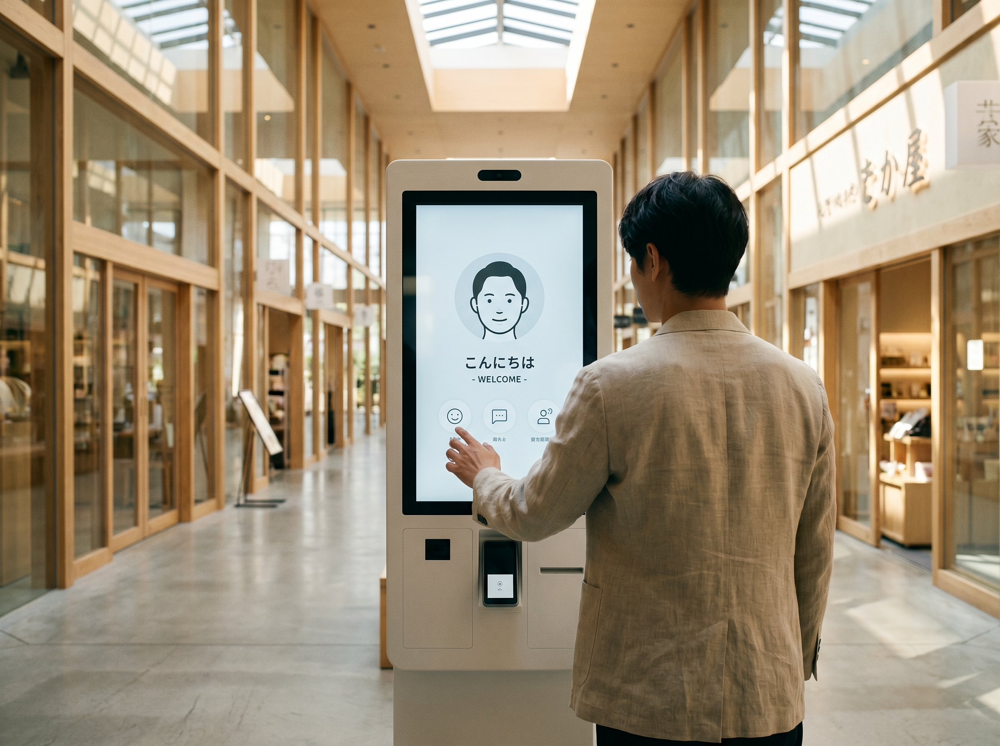
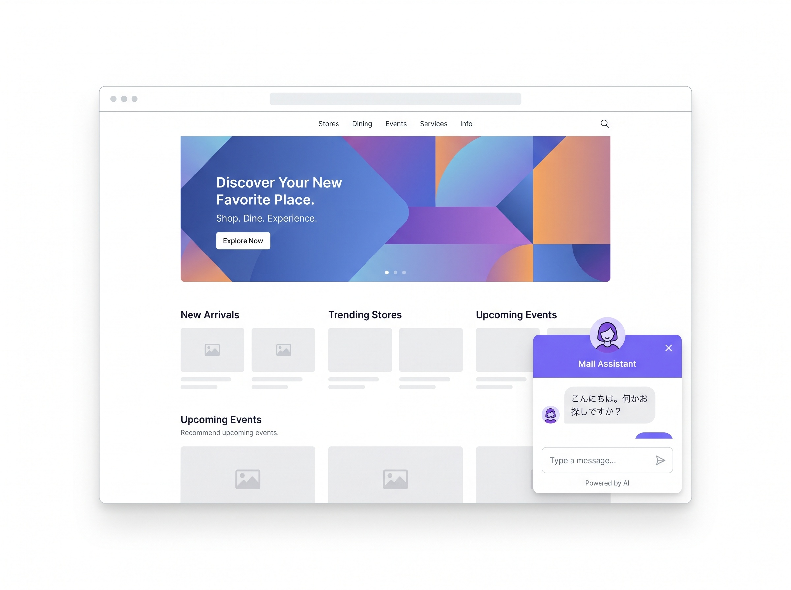
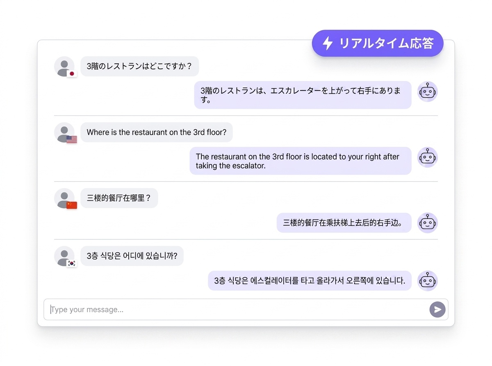
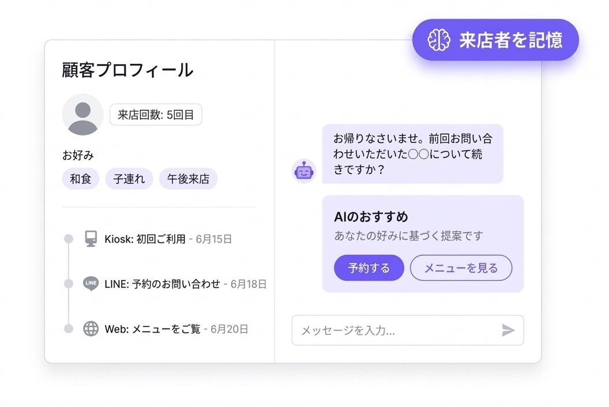
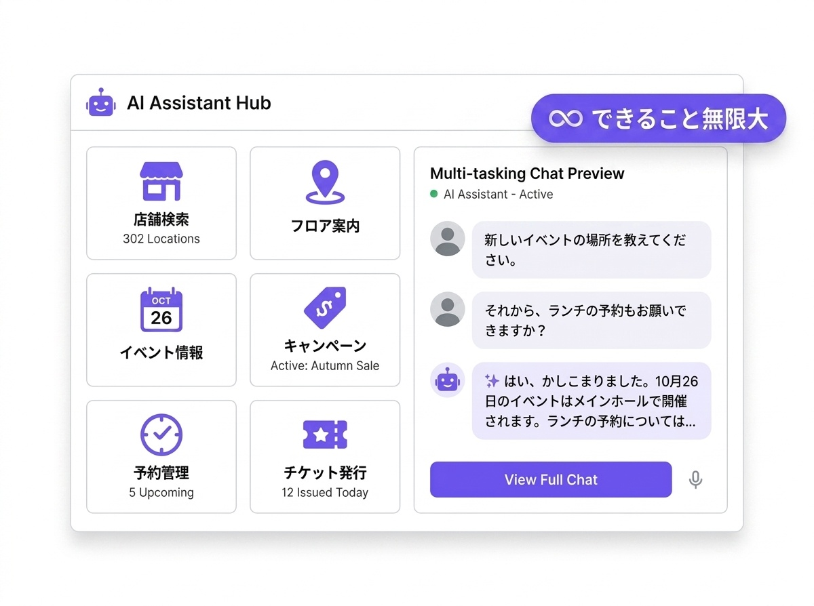

あらゆる接点から


施設内のタッチパネルから
音声でもタッチでも対話可能。最初に触れる入口として最適。
いつでも手元のスマホから
来店前の相談から、施設内の問い合わせまで。スタッフへの呼び出しも可能。
カメラをかざすだけで
館内に設置されたQRをスキャンすると、ブラウザで即座にAI対話開始。
施設サイトに埋め込み
来店前に自宅で施設案内・店舗検索が可能。Webサイトにチャットウィジェットを埋め込むだけ。
関連記事： チャネルを超えたシームレスな顧客体験については、 オムニチャネル対応のメリット で詳しく解説しています。
お客様の課題
課題 1
コンシェルジュ人材の確保・育成コストが増加の一途。
夜間・休日の対応には、さらに多くの人員が必要となり、
月間60万円以上の人件費がかかることも。
課題 2
インバウンド需要が増加しているが、多言語に対応できる
人材の確保が困難。通訳者を配置しても、1人1言語に限られるため、
全言語に対応するには多くの人員が必要。
課題 3
来店者が増え、コンシェルジュだけでは応答が追いつかず。
お客様を待たせることで、満足度の低下やキャンセルにつながります。
24時間対応のカスタマーサポートとはもご参照ください。
関連記事： AI受付システムの選定にお悩みの方は、 チャットボット比較ガイド で主要製品の機能を比較できます。
3つの能力で、来店者対応を変革
音声にもテキストにも対応。待ち時間ゼロで、来店者をスムーズに案内します。


来店者を特定し、好みを学習。チャネルを超えてシームレスな体験を提供します。
複雑な業務もシンプルに。来店者のあらゆるニーズに対応します。

機能
店舗検索からイベント案内、予約管理まで。AI案内ロボットとして、来店者が欲しい情報を最短距離で提供します。
「〇〇店はどこ？」「3階のレストランは？」施設内のあらゆる店舗を即座に検索・案内。
シーン例
「3階の奥、レストラン街です。エレベーターを上がって右側にお進みください」
「今日のイベントは？」「今月のキャンペーンは？」開催中のイベント情報を即座に回答。
シーン例
「本日は1階イベント広場で「春のフェア」を開催中。11時から抽選会もございます」
「〇〇店の予約したい」「チケットを購入したい」予約システムとの連携も可能。
シーン例
「ご希望の日時は？予約可能です。チケットの発行も承ります」
「そこまでどうやっていくの？」目的地までの最適ルートを案内。
シーン例
「現在地から〇〇店までは、エレベーターで3階へ。そのまま直進です」
「クーポンはない？」「会員特典は？」来店者に合わせたオファーを提案。
シーン例
「会員様限定で10%OFFクーポンをご利用いただけます。発行しますか？」
「何かおすすめは？」来店者の好みに応じた店舗・商品を提案。
シーン例
「以前カフェによく行かれていましたね。同じジャンルのお店をご紹介します」
顔認証 受付
顔認証技術により、再来店時のスムーズな対応と個人認識を実現。会員登録なしで来店者を記憶するAIコンシェルジュです。
以前来店したお客様を顔認証で自動判別。名前を呼んでのお出迎えが可能に。
顔データのみで来店者を特定。面倒な登録手続きなしでシームレスな体験を提供。
顔データは暗号化保存。一定期間経過後の自動削除設定可能で、GDPR対応も完備。
対応業種
商業施設・ホテル・企業フロント・公共施設で、AI案内ロボットとして導入事例が増加中。
店舗案内、イベント情報、クーポン配布。買い物をサポートするAIコンシェルジュ。
施設案内、周辺情報、予約確認。お客様をおもてなしするAIコンシェルジュ。
来客案内、アポイント管理、社内呼び出し。無人受付を実現するAIコンシェルジュ。
施設案内、申請案内、イベント案内。市民サービスを向上するAIコンシェルジュ。
関連記事： 実際の導入効果については、 チャットボット導入事例と効果 で他社の成功事例をご紹介しています。
導入までの流れ
ヒアリングから運用開始まで、最短3-4週間でAI受付システムをご利用いただけます。
施設の課題、対応言語、連携システムをお聞きし、最適なAIコンシェルジュ構成を設計します。
FAQデータの作成、システム連携、店頭端末の設置。AI受付システムの初期設定を一括サポート。
稼働後も定期的なデータ分析でAIコンシェルジュの応答精度を継続的に向上させます。
FAQ
AI受付システム「GBase Concierge」に関するよくあるご質問にお答えします。
ヒアリングから運用開始まで、最短3-4週間程度です。既存システムとの連携やFAQデータの作成状況により前後します。
日本語、英語、中国語、韓国語など10言語以上に対応しています。インバウンド客の多い施設での多言語対応におすすめです。
店頭端末・サイネージ、LINE/LINE WORKS、QRコード、Webウィジェットなど、あらゆるチャネルからAI受付システムをご利用いただけます。
施設規模や利用チャネル数により異なります。まずは無料トライアルでお試しいただけます。詳細はお問い合わせください。
はい、API連携により主要な予約システムと連携可能です。来店者からの予約依頼もスムーズに処理できます。
関連記事： 効果的なFAQ構築のポイントは、 FAQ管理の効率化 や FAQ完全ガイド【2026年版】 で詳しく解説しています。